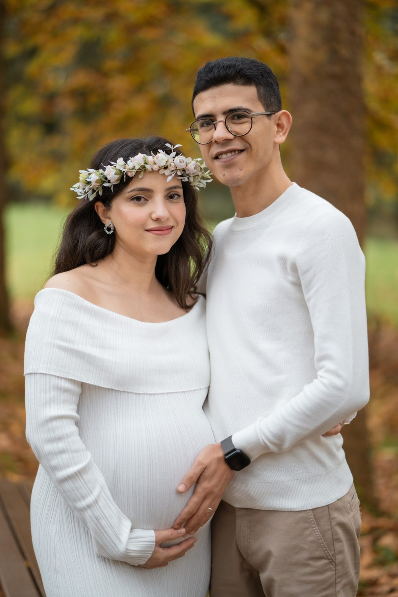
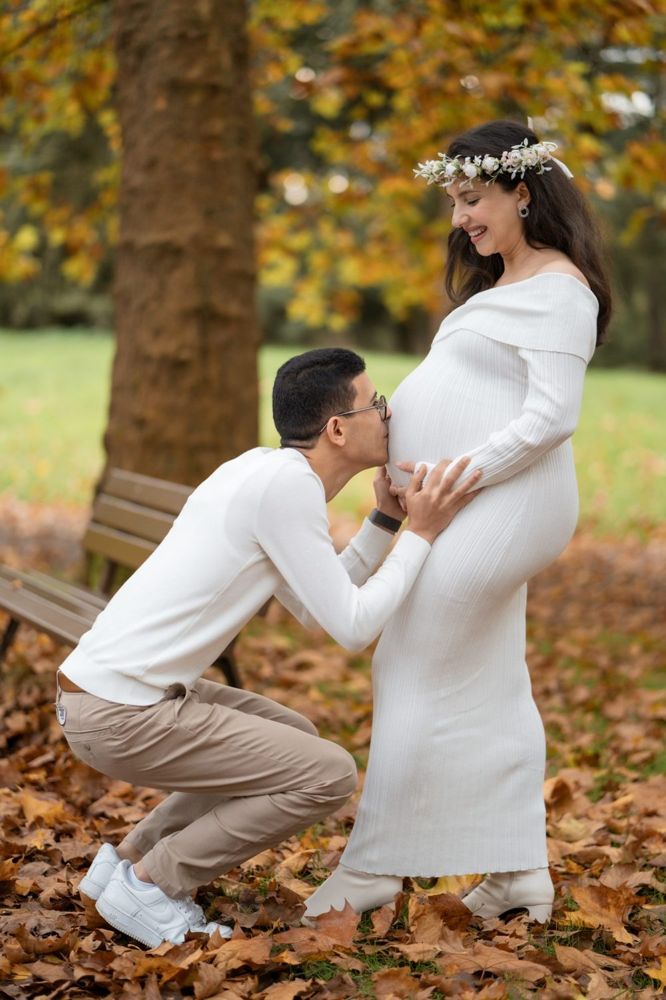
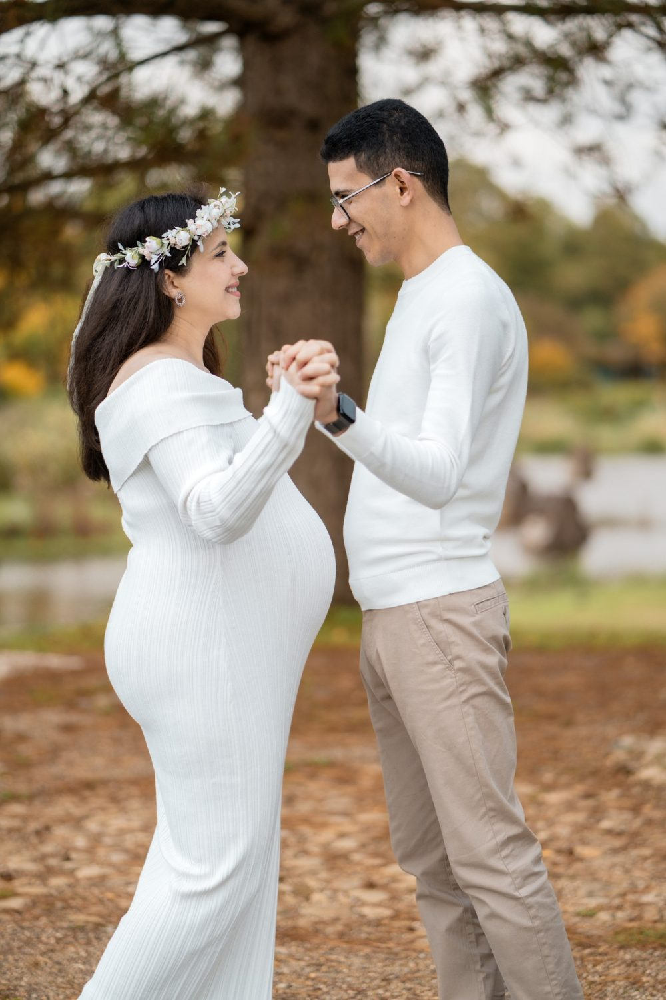

Photographe de grossesse et vidéaste à Paris
Une séance grossesse garde ce temps d'attente, le ventre arrondi, les mains qui se posent dessus, les mots que vous murmurez au bébé.

Notre manière de travailler
La grossesse est un temps suspendu, qui passe plus vite qu'on ne l'imagine. Le Couple Photographe propose une séance grossesse pensée comme une parenthèse calme : une heure à une heure trente, à votre rythme, avec des pauses dès que vous en ressentez le besoin. Le moment idéal se situe en général entre la 28e et la 35e semaine, quand le ventre est bien visible et que vous restez à l'aise pour bouger.
Le fait d'être deux change la séance. Pendant qu'un photographe compose des portraits en lumière naturelle, l'autre filme les gestes, les regards et, si vous le souhaitez, la voix d'un parent qui raconte l'attente. La séance peut avoir lieu dans un parc, en bord d'eau ou chez vous, avec le futur parent et les aînés. Vous recevez une galerie privée et un mini-film à partager avec vos proches avant l'arrivée du bébé.
Du premier échange à la livraison
Choix du lieu et de la date
Le Couple Photographe fixe avec vous la période idéale selon l'avancée de votre grossesse et la météo prévue. Nous choisissons ensemble un lieu en extérieur ou votre domicile, et nous prévoyons toujours un plan B en intérieur en cas de pluie.
Préparation des tenues
Nous vous conseillons sur les couleurs et les matières qui mettent le ventre en valeur : robe fluide, chemise ouverte, tissus qui épousent les formes. Privilégiez des vêtements souples, sans élastique serré qui laisserait une marque sur la peau.
La séance photo et vidéo
La séance commence par des portraits seule, puis à deux, et avec les aînés si vous en avez, en leur laissant un temps de jeu. Elle se termine par des détails du ventre et des mains, pendant que la vidéo capte les gestes.
Livraison de la galerie et du film
Dans les jours qui suivent, vous recevez une galerie privée d'une vingtaine à une quarantaine d'images retouchées, en couleur et en noir et blanc, ainsi qu'un film d'une à deux minutes, sur musique douce ou avec votre voix.
Pour une belle séance
Choisissez des vêtements souples, sans élastique serré qui marque la peau.
Évitez de programmer la séance après un repas lourd : un ventre au repos se photographie mieux.
Si vous avez des aînés, prévoyez un temps de jeu pour qu'ils participent sans s'ennuyer.
Quelle saison ?
Toute l'année : en hiver, séance en intérieur ou en lumière douce de fin de matinée.
Deux regards, une seule équipe
Côté photo
Une vingtaine à une quarantaine d'images retouchées, en couleur et en noir et blanc.
Côté vidéo
Film court de 1 à 2 minutes, sur musique douce ou avec votre voix.
Durée
Séance d'une heure à une heure trente, avec pauses autant que nécessaire.




Avant de nous écrire
À quel moment de la grossesse faire une séance photo ?
Le Couple Photographe recommande en général une séance grossesse entre la 28e et la 35e semaine d'aménorrhée. À ce stade, le ventre est bien visible et vous restez mobile et à l'aise. Si votre grossesse demande plus de repos, la séance peut se faire plus tôt ou à domicile, sans effort particulier.
Combien de temps dure une séance photo de grossesse ?
Une séance grossesse avec Le Couple Photographe dure d'une heure à une heure trente. Le rythme s'adapte à votre énergie du jour, avec autant de pauses que nécessaire pour vous asseoir, boire ou vous changer. Le but est que vous gardiez un souvenir agréable de ce moment, sans fatigue inutile.
Que porter et comment se préparer pour un shooting grossesse ?
Choisissez des vêtements souples, sans élastique serré qui marque la peau, et des tissus qui épousent le ventre, comme une robe fluide ou une chemise. Évitez de programmer la séance juste après un repas lourd : un ventre au repos se photographie mieux. Le duo vous conseille sur les couleurs avant la séance.
Peut-on avoir des photos et une vidéo de grossesse en même temps ?
Oui. Le Couple Photographe est un duo de photographes et vidéastes : l'un réalise les portraits pendant que l'autre filme. Vous recevez des images retouchées en couleur et en noir et blanc, ainsi qu'un film court d'une à deux minutes, sur musique douce ou avec votre voix qui raconte l'attente.
La séance grossesse est-elle possible à domicile ou avec les enfants ?
Oui, la séance peut se faire chez vous si votre logement bénéficie d'une belle lumière naturelle, un choix confortable en fin de grossesse. Les aînés sont les bienvenus : les portraits avec eux sont souvent les plus touchants, et un moment de jeu est prévu pour qu'ils participent sans s'ennuyer.
Où se déroulent les séances et comment réserver ?
Le Couple Photographe intervient à Paris, en Île-de-France et dans toute la France, en extérieur ou à domicile, toute l'année. Pour réserver, décrivez votre projet via le formulaire de contact en indiquant le terme prévu. Le duo vous répond avec un devis personnalisé et propose une période adaptée.
Grossesse près de chez vous
Parlons de votre mariage
Demander un devisAutres prestations
© Le Couple Photographe · Photographe de mariage Paris & Île-de-France · Mis à jour le 10 octobre 2026
Demander un devis